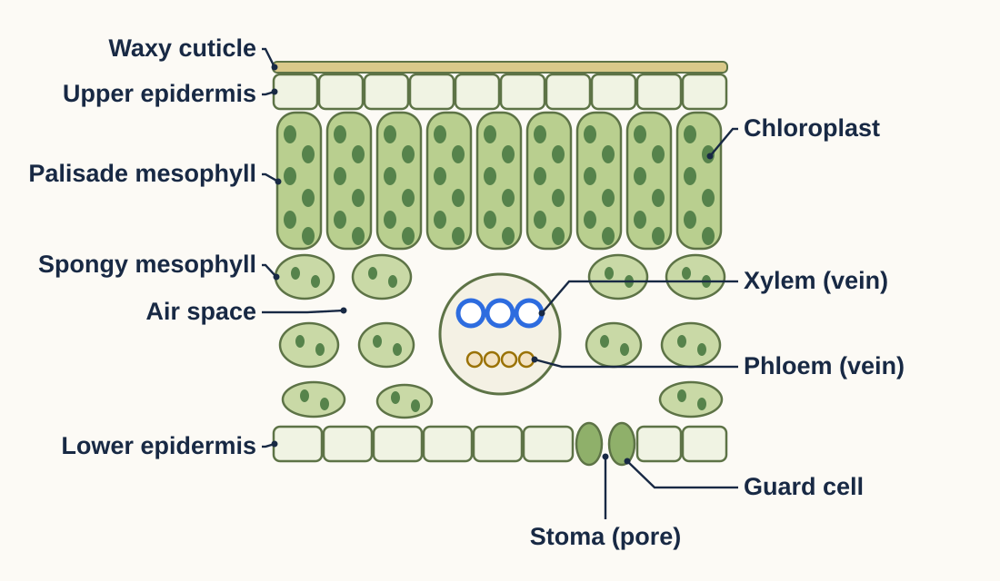
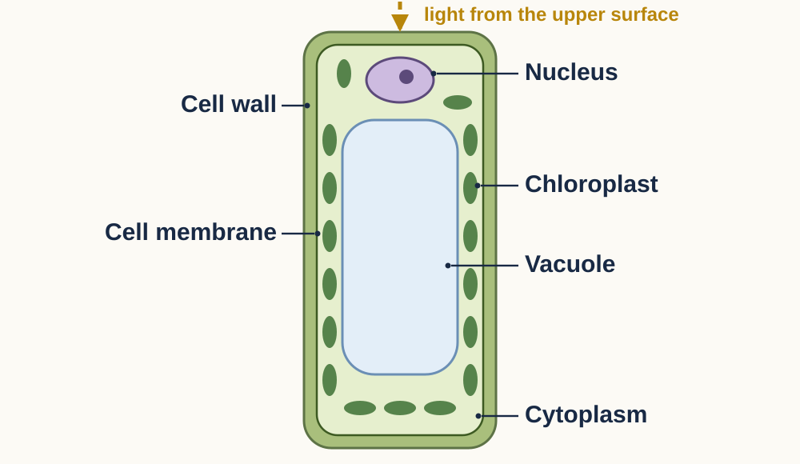

| Name | Job: what it does | Link: which input or output it helps |
|---|---|---|
| 1 Palisade cells | Tall cells packed with chloroplasts, just under the upper surface. | Absorb as much light as possible. |
| 2 Stoma + guard cells | A pore. Guard cells open and ______ it. | Lets __________ diffuse in and __________ out. |
| 3 Air spaces | Gaps between ______ cells. | __________ diffuses quickly to the __________ cells. |
| 4 Xylem | ||
| 5 Phloem | ||
| 6 Waxy cuticle + upper epidermis | ||
| 7 Leaf is broad and thin |
